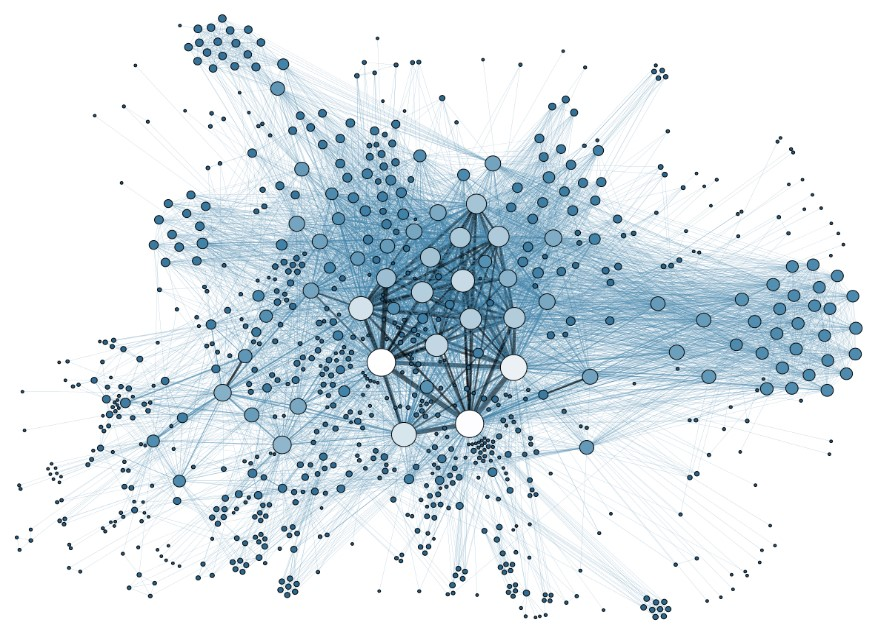
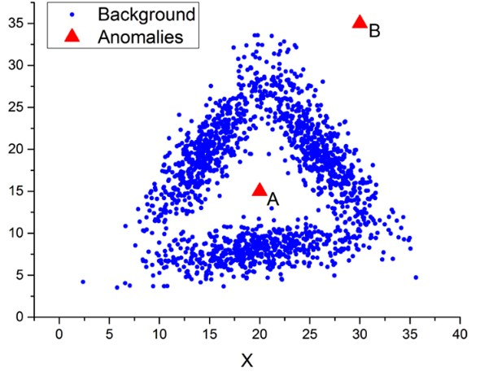

Anomaly detection is to find out strange or abnormal events from usual events in the given data. We
can easily observe the anomalies when we visualize the data using different types of charts, algorithms and etc.
Here I am writing different approaches for anomaly detection in big data and I will update this section
simultaneously with learning algorithms.
Some techniques I used in anomaly detection:
1) Line Graph based anomaly detection
2) Community based anomaly detection
3) Density-based techniques
4) Cluster analysis-based outlier detection
And other techniques I will update it soon
1) Line Graph based anomaly detection
This is the easy approach to detect the abnormal activity in the data. The data should be near to constant
values or bell shape curves or any distribution graphs.
Use Case:
Understanding the traffic hits over destination ports for inbound traffic.
In above picture, graph was plotted on number of hits of port “135” by hour over the day. We can observe by
observing the picture, there was spike at the hour 12 pm. The network traffic usually follows the bell shape
curve. If any sudden rise or fall in the hits, we can identify the abnormal activity. It might also due to the
network down if any sudden fall and user might uploads then traffic hits increase rather than usual and it
cause for sudden rise in the graph. This is can use as watch list for traffic hits in the organization .
2) Community based anomaly detection
Drawing the traffic flows between IP addresses, we can identify relations between the IP’s and also it called
Community relation diagram. If any IP contacting the more destinations, the density is changed in the

visualization. The anomaly detection is possible by observing the graph. It goes difficult if the nodes or IP
addresses are large in count.
Use Case:
Gephi is an open source software that draws network visualizations.
3) Density-based techniques
Use Case: To be updated
4) Cluster analysis-based outlier detection
Bringing similar events together, by this we can observe the abnormal activity. Because, the abnormal or
outlier event was not similar to other and they are rare occurrences.

Use Case: We can implement this in security for finding outliers in the required fields for example
Splunk. We can track the suspicious process names from the list of several processes by this technique.
We can apply this technique for other applications for detecting outliers like traffic hits in count and etc.